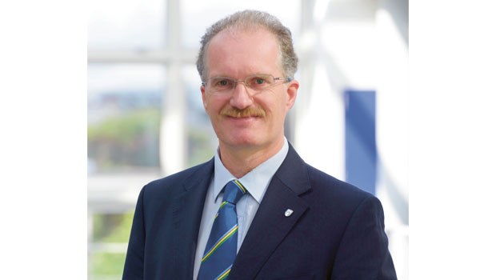
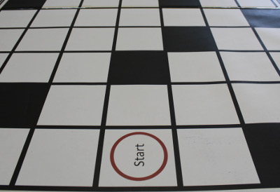

TU Dublin, Ireland’s first Technological University, is where career-focused students, dedicated staff and academic excellence in science, the arts, business, engineering and technology converge to create the leaders of tomorrow. We offer an inclusive and open learning experience with pathways to graduation, from Apprenticeship to PhD. Our 28,500 students learn in a practice-based environment informed by the latest research and enabled by technological advances.
TU Dublin hosts a thriving research community engaged in applying innovation and technology to solve the world’s most pressing challenges. We are deeply committed to collaborating with our national and international academic partners and our many networks in industry and civic society to create new learning experiences and develop impactful research.

Professor David FitzPatrick, President of Technological University Dublin
Professor David FitzPatrick is the inaugural president for TU Dublin following its designation as a Technological University on the 1st of January 2019.
Mission Statement
Located in the heart of Ireland's capital city, TU Dublin provides an innovative, responsive and caring learning environment for a diverse range and level of programmes to students of all ages and backgrounds.

combines the academic quality of a traditional university with career-focussed learning, discovery and the application of knowledge
emphasises excellence in learning, teaching, scholarship, research and support for entrepreneurship,
contributes to technological, economic, social and cultural progress, and